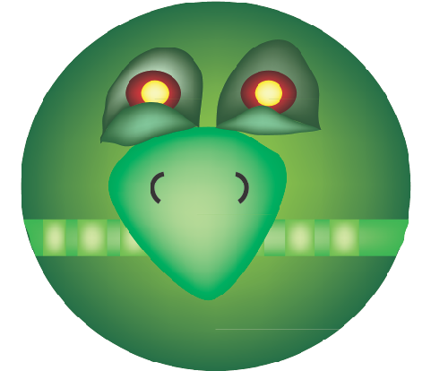
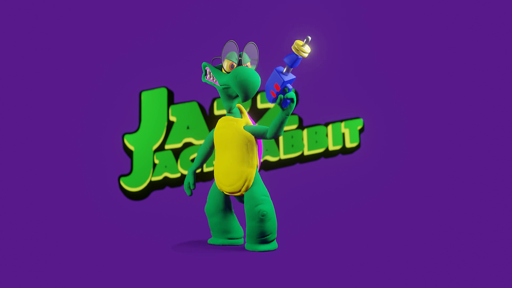

TRAMA
PERSONAGGI
EPISODI
DINAMICHE
DEVAN SHELL

Devan Shell è il villain principale dell’intera saga di “Jazz Jackrabbit”. Dalla mente spietata, Devan Shell è una tartaruga scienziato. La sua nomina è quella di fallire qualsiasi esperimento. Noto per i suoi occhiali spessi e per il suo ghigno malefico, il compito di Shell è quello di eliminare le lepri per l’onore delle tartarughe.
Devan Shell è anche noto per la sua spregevole superbia. Sin dal primo capitolo gestisce il controllo dei nemici che Jazz deve affrontare. In base al livello aumenta sempre di più il grado il difficoltà.
